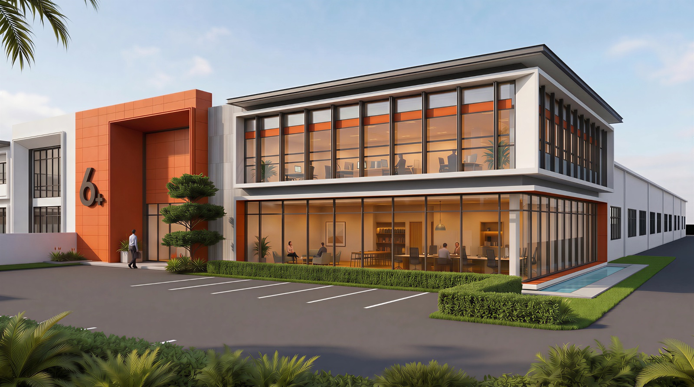

Every meaningful project begins with understanding.
We help homeowners and businesses clarify what they need before shaping spaces around how people live, work and use them.
01 / INDUSTRIALJENJAROM, MALAYSIA

6+ Factory
Industrial · Concept proposal